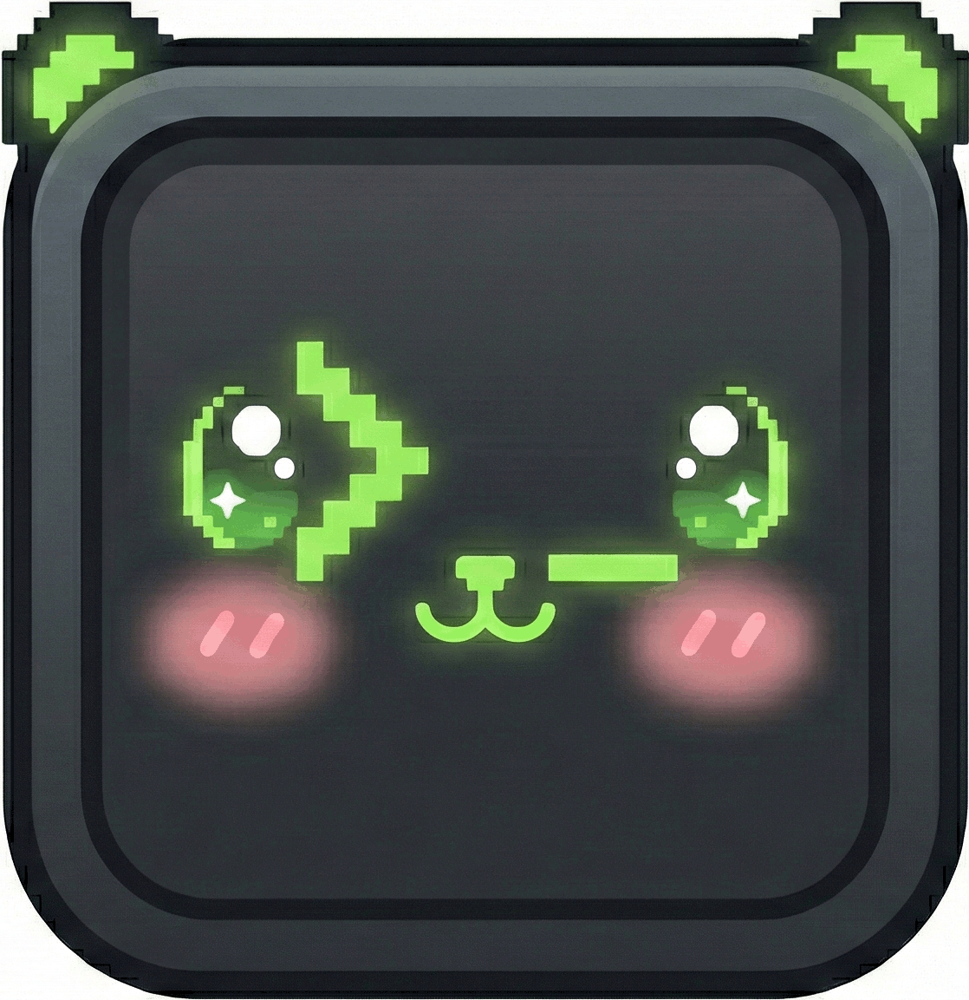

asky
A command-line AI assistant with web search, document Q&A, conversation history, and XMPP remote chat.
uv tool install asky-cli
Features
Multi-Model Support
Works with OpenRouter, Gemini, OpenAI, Anthropic, or local models via LM Studio and Ollama.
Web Search & Tools
Search the web, fetch URLs, and use tool calling. Supports SearXNG, Tavily, and Serper.
Document Q&A
Ask questions about PDFs, EPUBs, or entire folders. Vector-indexed for semantic search.
XMPP Daemon Mode
Run as a background service and chat from any XMPP client on phone or desktop.
Conversation History
Every query is saved. Resume conversations with -c or use named sessions with -ss.
Deep Research Mode
Iterative retrieval across web sources and local documents for comprehensive answers.
Personas
Create and switch between specialized AI personas tailored for specific workflows or domains.
Custom Tools
Extend capabilities by defining your own executable tools that asky can use to solve tasks.
User Memory & Elephant Mode
Long term memory storage allowing the assistant to remember your preferences and past context across sessions.
Usage Examples
Free and open source. MIT License.
github.com/evrenesat/asky